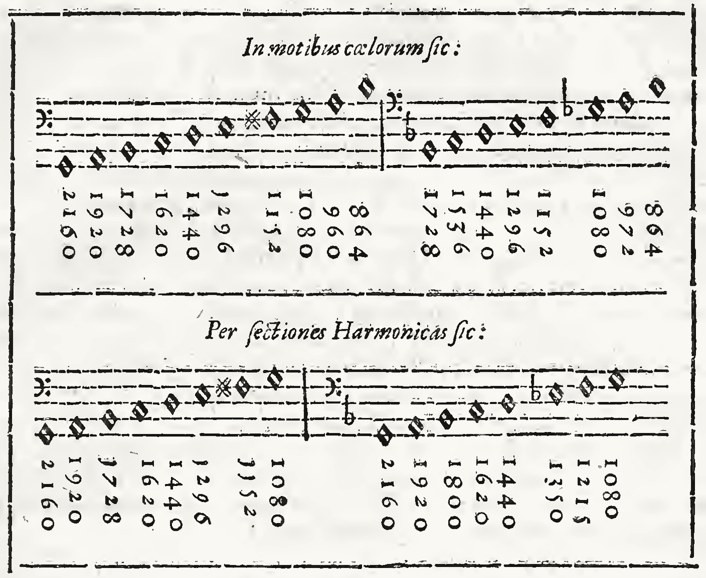

Chapter V: Planetary Tuning in the Musical Scale (Cantus Durus & Mollis)¶
CHAPTER V. That in the Proportions of the apparent Planetary motions (as if to spectators from the Sun) are expressed the Places of the System, or Keys of the Musical Scale, and the kinds of song, Hard and Soft.
That, therefore, among these twelve terms or Motions of the six Planets running round the sun, upwards, downwards, and in every direction, there stand Harmonic proportions, or ones nearest to such within an insensible part of the least Harmonious interval, has been proved hitherto, through numbers sought on the one hand from Astronomy, and on the other from Harmonics. And just as in the third book we first drew out the Harmonic proportions singly and separately in the first chapter, and only then in the second chapter fastened them all together, as many as there were, into one common System or Musical Scale, or rather, we divided one Diapason of theirs, which embraces the rest in potency, into its steps or Places through those others, and thereby brought it about that it was a Scale: so now also, having discovered the Harmonies which God Himself has embodied in the World, it follows that we see whether each stands so apart that it has no kinship with the rest, or whether all agree among themselves? Although it is easy to conclude even without further inquiry that these Harmonies have been fitted together with the highest design so as to support one another within one framework, so to speak, and not one destroy another; inasmuch as we see that in so manifold a comparison of the same terms, Harmonies nowhere fail to occur. For unless all had been fitted to all into one Scale, it could easily have happened (and has happened everywhere, necessity so urging) that several dissonances would exist. As if someone were to establish a major Sixth between the first and second term, and likewise a major Third between the second and third, without regard to the former: he would admit between the first and third a dissonance and an inharmonious interval, 12 to 25.
f. 0295 · p. 203Come then, let us see whether what we have already gathered by reasoning is found so in fact. Yet let us set out a few cautions beforehand, so that we may stumble the less in our progress. First, we must for the present pass over those excesses or defects smaller than a semitone; for what causes they have, we shall see afterwards. Next, by continual doubling or the contrary bisection of motions, we shall reduce everything within the System of a single Octave, because of the Identity of sound of all Diapasons.
Therefore the Numbers by which all the Places or Keys of the Octave system are expressed have been set forth in the table in the eighth chapter of the third Book, folio 47: understand those numbers, namely, of the length of two strings. Consequently, therefore, the swiftnesses of the motions will be among themselves in the inverted proportions.
Let the motions of the Planets now be compared in continually subduple parts. Thus there is
Motion |
Min. Sec. |
|---|---|
Seventh subduple, or 128th, of Perihelion ☿ |
|
Sixth subduple, or 64th, of Aphelion ☿ |
|
Fifth subduple, or 32nd, of Perihelion ♀ |
|
Fifth subduple, or 32nd, of Venus Aphelion |
|
Fifth subduple, or 32nd, of Earth Perihelion |
|
Fifth subduple, or 32nd, of Earth Aphelion |
|
Fourth subduple, or 16th, of Mars Perihelion |
|
Third subduple, or 8th, of Mars Aphelion |
|
Subduple of Jupiter Perihelion |
|
Subduple of Jupiter Aphelion |
|
Saturn Perihelion |
|
Saturn Aphelion |
Now let the aphelion motion of Saturn, the slowest, that is, the lowest of all, mark the lowest place G of the System by the number 1 min. 46 sec. Therefore the aphelion of the Earth will also mark the same place, though five Diapasons higher, because its number is 1 min. 47 sec.; and who would dare contend over one Second in the aphelion motion of Saturn? Let it be so, however; the difference will not be greater than 106 to 107, which is less than a comma. If to this 1 min. 47 sec. you add its fourth part, 27 sec., there will be made 2 min. 14 sec., whereas Saturn’s perihelion has 2 min. 15 sec., and Jupiter’s aphelion likewise, though higher by one Diapason. Therefore these two motions mark the Key ♮, or become a very little higher. Take a third, 36 sec. -, from 1 min. 47 sec. and add it to the whole: you will bring forth 2 min. 23 sec. - for Key c: and behold the perihelion of Mars, of the same magnitude, though higher by four Diapasons. To the same 1 min. 47 sec. add also its half, 54 sec. -, and 2 min. 41 sec. - will be made, for Key d: and behold here at hand Jupiter’s perihelion, though higher by one Diapason: for it obtains the nearest number, namely 2 min. 45 sec. If you add two thirds, namely 1 min. 11 sec. +, there come forth 2 min. 58 sec. -. And behold Venus’s aphelion 2 min. 58 sec. -. It marks here, therefore, the place or Key e, though higher by five Diapasons: nor does Mercury’s perihelion surpass it by much, having 3 min. 0 sec., though higher by 7 Diapason intervals. Finally, divide the double of 1 min. 47 sec. itself, namely 3 min. 34 sec., into nine,
f. 0296 · p. 204and take one part, 24 sec., from the whole; there remains 3 min. 10 sec. + for key f, which Mars’s aphelion 3 min. 17 sec. nearly marks, though higher by three Diapasons, and the number itself is a little greater than is just, approaching key fe [f♯]. For the sixteenth part of 3 min. 34 sec., namely 13 and a half sec., taken from 3 min. 34 sec. leaves 3 min. 20 and a half sec., to which 3 min. 17 sec. is nearest. And indeed in Music too, fe [f♯] is frequently employed in place of f, as may be seen everywhere.
Therefore all the keys of the hard song within one Octave (except key A, which was not marked by the Harmonic divisions in Book III, Chapter II either) are marked by all the extreme motions of the Planets, except the perihelia of Venus and the Earth, and the aphelion of Mercury, whose number 2 min. 34 sec. approaches key ce [c♯]. For take from d, 2 min. 41 sec., its sixteenth part, 10 sec. +; there remains 2 min. 30 sec. for key ce [c♯]: thus only the perihelia of Venus and the Earth are banished from this Scale, as you see in the table.
Key |
Planetary Motion |
|---|---|
G |
♄ aphelion |
A |
Vacant. |
♮ |
♄ perihelion, ♃ aphelion |
c |
♂ perihelion |
c♯ |
☿ aphelion nearly |
d |
♃ perihelion nearly. |
e |
☿ perihelion nearly., ♀ aphelion. |
f♯ |
♂ aphelion |
g |
Earth aphelion |
On the contrary, if the beginning of the scale be made from Saturn’s perihelion motion 2 min. 15 sec., and it be bidden to represent key G: then to key A come 2 min. 32 - sec., which approaches very close to the aphelion of Mercury; to Key b come 2 min. 42 sec., which is very nearly the perihelion of ♃, by equivalence of Octaves; to Key c come 3 min. 0 sec., the perihelion of Mercury and Venus very nearly; to Key d come 3 min. 23 sec. - nor is Mars’s aphelion much flatter, namely 3 min. 18 sec., so that here the number is nearly as much less than its key as before it was greater than its own: to Key de [d♯/e♭] come 3 min. 36 sec., which the aphelion motion of the Earth nearly reaches; to Key e come 3 min. 50 sec., and the perihelion of the Earth is 3 min. 49 sec. While Jupiter’s aphelion again holds g.
In this manner all the keys within one octave of the soft song, except f, are expressed by the aphelia and perihelia, by most motions of the planets, especially those which were previously omitted, as you see in the Table:
Key |
Planetary Motion |
|---|---|
G |
♄ perihelion |
A |
☿ aphelion |
b |
♃ perihelion |
c |
☿ perihelion, ♀ perihelion |
d |
♂ aphelion nearly |
d♯/e♭ |
Earth aphelion |
e |
Earth perihelion nearly. |
f |
Vacant |
g |
♃ aphelion |
Whereas before fe [f♯] was marked and A omitted, now A is marked and fe [f♯] omitted; for the Harmonic divisions in Chapter II also omitted key f.
f. 0297 · p. 205Thus in the heaven, in a twofold way and as it were in two kinds of song, there is expressed a Musical scale, or system of one Octave, with all the places through which natural song is carried in Music. The only difference is in this: that in our Harmonic divisions, indeed, both ways begin conjointly from one and the same term G; whereas here in the motions of the planets, what was formerly ♮ now in the Soft kind becomes G.


For just as in Music 2160 stands to 1800, or 6 to 5, so in that system which the heaven expresses, 1728 stands to 1440, namely also as 6 to 5; and so of most of the rest: | 2160 to 1800, 1620, 1440, 1350, 1080. | As 1728 to 1440, 1296, 1152, 1080, 864.
No longer, therefore, will you wonder that a most excellent order of sounds or steps in the Musical system or scale has been established by men: since you see that in this matter they do nothing else than act as apes of God the Creator, and play as it were a certain drama of the ordering of the celestial motions.
Yet there remains also another way by which we may understand a double Musical scale in the heaven: where the system indeed is the same, but a twin tension is conceived, the one to the aphelion motion of Venus, the other to the perihelion: because the variety of this planet’s motions is of the least quantity, such as contains itself within the magnitude of a Diesis, the least Harmonious interval. And the aphelion tension, as above, has the aphelion motions of Saturn, the Earth, Venus, and nearly Jupiter, in G, e, ♮, and the perihelion motions of Mars and nearly Saturn, and as appears at first sight, also of Mercury, in c, e, ♮: the perihelion tension, on the contrary, gives place also to the aphelia of Mars, Mercury, and nearly Jupiter, and to the
f. 0298 · p. 206perihelia of Jupiter, Venus, and nearly Saturn; in some measure also of the Earth; and without doubt also of Mercury. For let it be that now not the aphelion of Venus, but the perihelion 3 min. 3 sec. takes place e; to it very closely approaches also the perihelion of Mercury 3 min. 0 sec. through a Disdiapason, by the end of chapter IV. Now if from this perihelion of ♀, 3 min. 3 sec., its tenth part, 18 sec., be taken away, there remains 2 min. 45 sec., the perihelion of Jupiter, obtaining place d: and if its fifteenth part, 12 min. [sec.], be added, it heaps up 3 min. 15 sec., nearly the aphelion of Mars, obtaining place f. And thus on ♮, Saturn’s perihelion and Jupiter’s aphelion will also follow nearly the same tension.
But the eighth part, 23 sec., taken five times gives 1 min. 55 sec., which is the perihelion of the Earth; which although it does not square into the same scale with the foregoing, as not ordering the interval 5 to 8 below e, nor 24 to 25 above G, nevertheless if now Venus’s perihelion, and so also Mercury’s aphelion, out of order instead of e take place de [d♯/e♭], then this perihelion of the Earth will take place G; and Mercury’s aphelion will also consent, because the third part 1 min. 1 sec. of 3 min. 3 sec. taken five times becomes 5 min. 5 sec., whose half 2 min. 32 sec. + very closely approaches Mercury’s aphelion, which in this extraordinary accommodation will obtain place c. All these, therefore, are indeed of the same tension among themselves: yet Venus’s perihelion divides the Scale otherwise; with the three (or five) former ones, in the same Harmonic kind, namely, as its aphelion in its own tension, namely the Hard kind: otherwise also does the same perihelion of Venus divide the same scale with the two latter ones; namely, not into other Harmonious intervals, but at least into a different order of Harmonious intervals, which namely is proper to the Soft kind.
Yet it suffices, in this chapter, to have set before the eyes what is in question: why indeed each thing has been done thus, and what are the causes not only of agreements, but also of discrepancy in the smallest things, this will be laid open by the clearest demonstrations in Chapter IX.